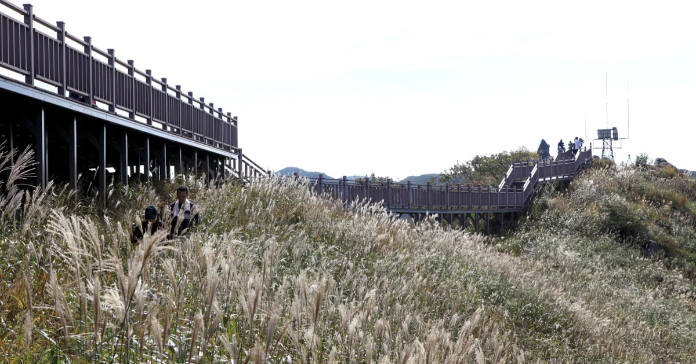
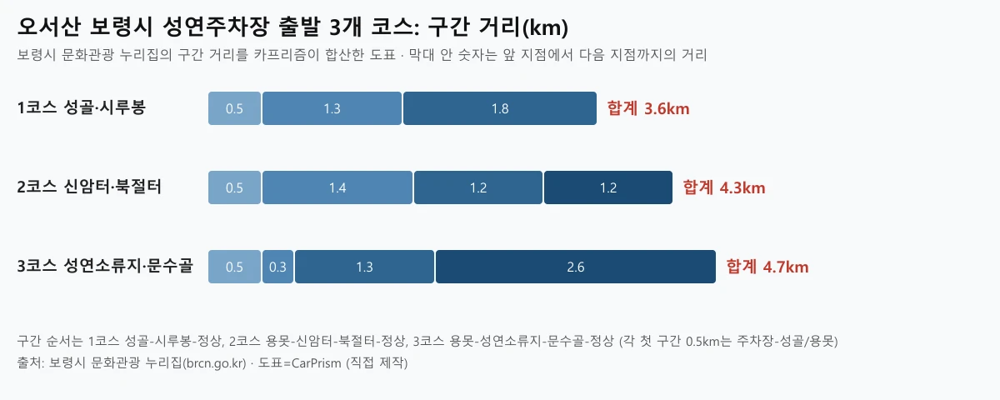
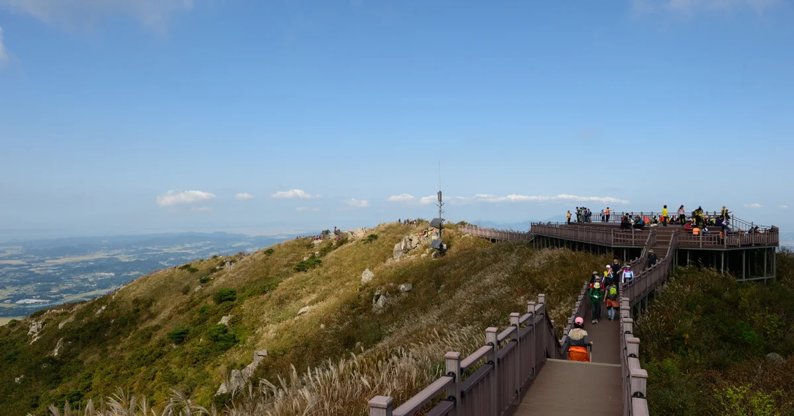
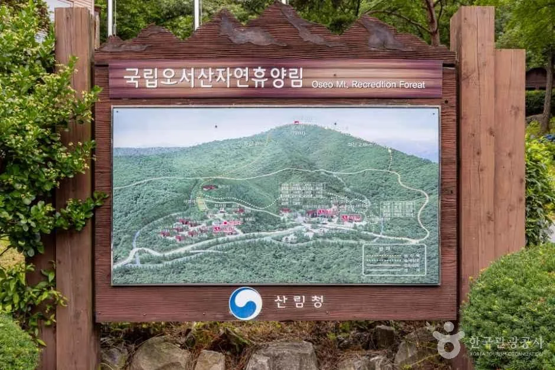
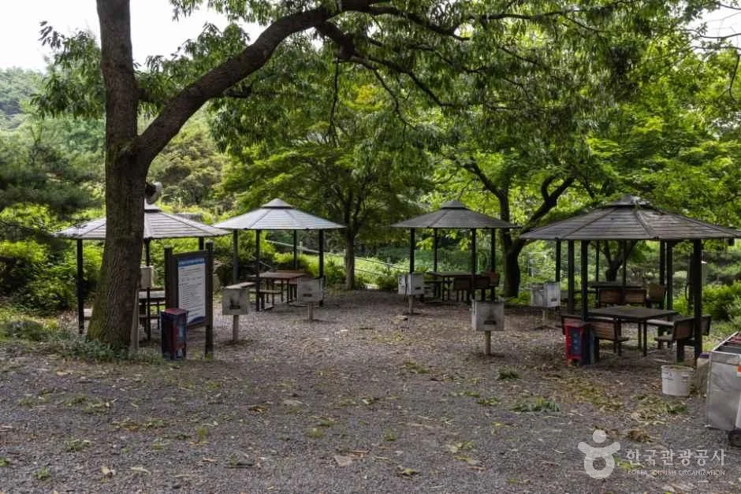
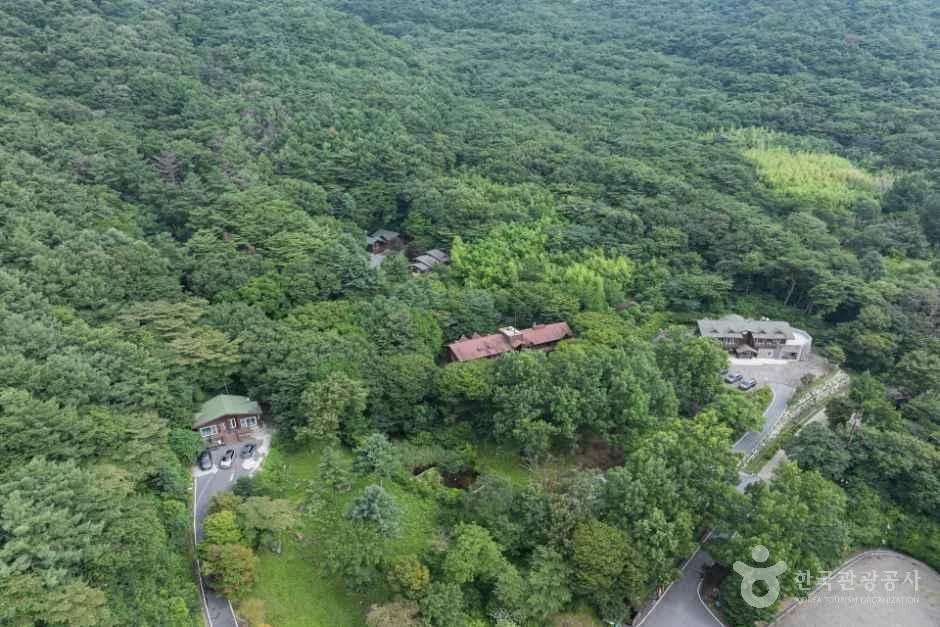
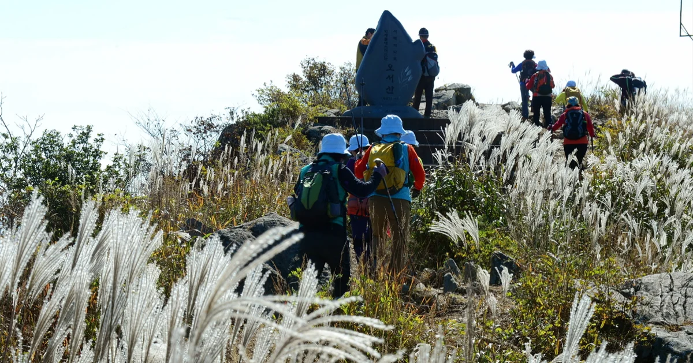
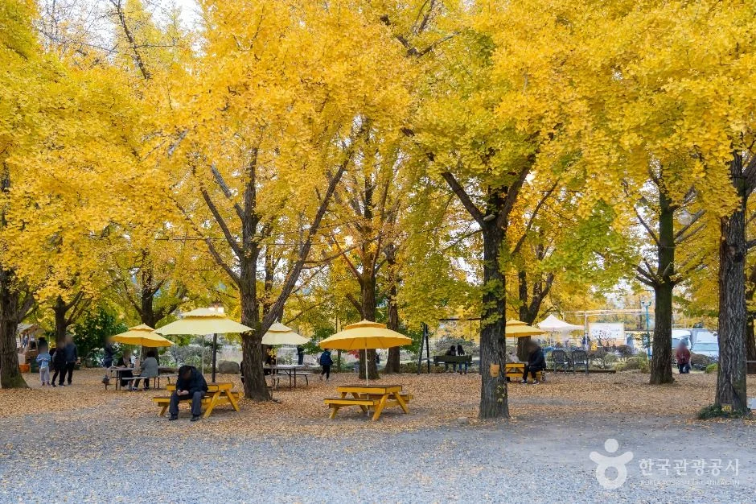
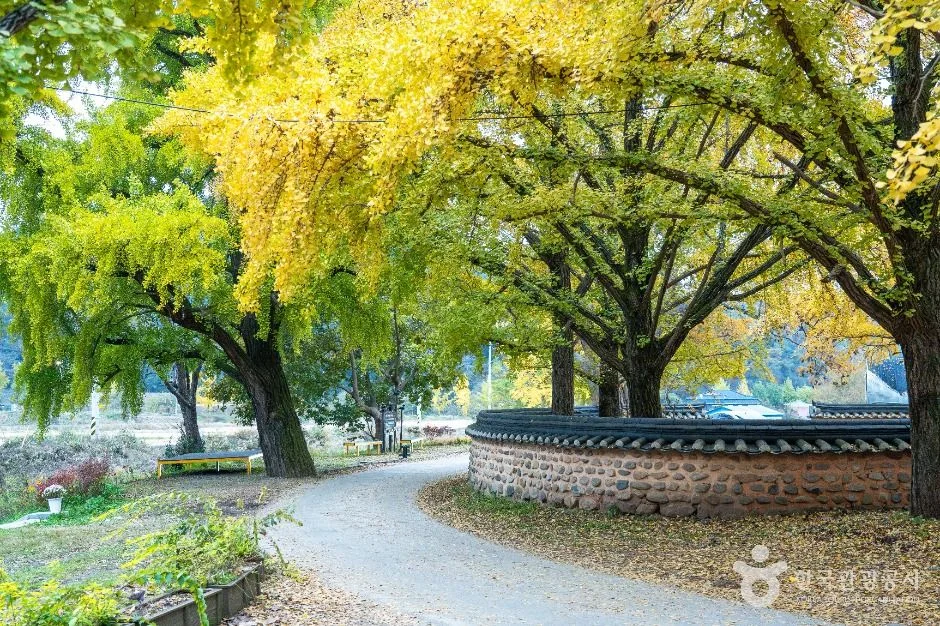
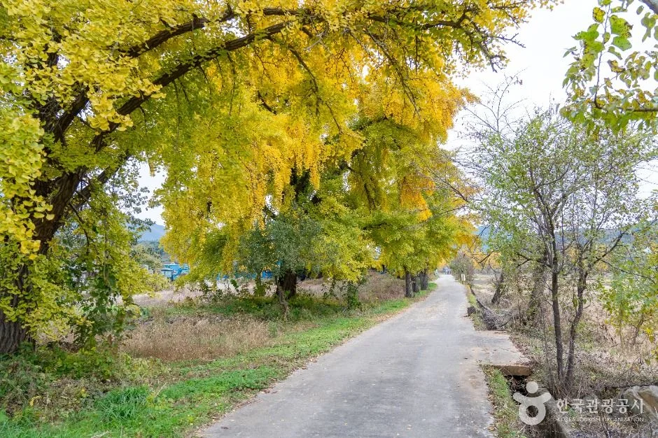

▲ 오서산 능선. 홍성군 누리집이 게시한 사진으로, 정상에서 서해안 일대가 내려다보인다
"오서산 억새, 지금 가면 절정일까?" 2026년 10월 15일(목) 현재 기준으로, 보령시·홍성군 누리집과 한국관광공사 자료를 직접 열어 확인한 내용만 정리했다. 결론부터 말하면 올해 억새 상태를 알려주는 공식 실시간 자료는 확인하지 못했다. 대신 공식 누리집이 적어 둔 등산 코스 거리와 시간, 휴양림 운영 시간은 확인됐다.
💡 먼저 결론
오서산 정상은 해발 791m(홍성군 표기, 보령시 누리집은 790.7m)로 충남 서해안 쪽에서 손꼽히는 높은 산이다. 보령 성연주차장에서는 1코스 합계 3.6km가 가장 짧고, 홍성 상담 주차장에서는 정암사를 거치는 코스3(약 2시간)이 가장 짧게 안내된다. 억새는 한국관광공사 자료상 10월 초순에 피기 시작해 중순에 절정이라는 예년 경향일 뿐, 올해 상황은 방문 직전 확인이 필요하다.
1. 오서산은 어디에 있나 — 보령·홍성·청양이 만나는 791m 능선
▲ 홍성군 문화관광 누리집이 게시한 오서산 능선. 정상에서 서해안 일대 풍경이 시원하게 펼쳐진다 사진=홍성군
오서산은 보령시, 홍성군, 청양군에 걸쳐 있는 산이다. 한국관광공사 정보는 서해 연안의 산 중에서 가장 높고 금북정맥의 최고봉이라고 소개한다. 홍성군 누리집은 "충남 서북부 최고봉(791m)"이라 적고, 정상에서 북쪽 740m봉으로 이어지는 주능선 곳곳에 억새밭이 있다고 설명한다. 산 이름은 까마귀와 까치가 많이 깃들어 산다는 데서 붙었다는 것이 관광공사 설명이다.
높이 표기는 기관마다 다르다. 홍성군은 791m, 보령시 문화관광 누리집은 790.7m로 적는다. 소수점 반올림 차이로 보이지만 두 기관이 같은 수치를 쓰지는 않으므로 본문에서는 791m(790.7m)로 함께 적었다. 홍성군 누리집은 정상이 서해안에서 멀리 바다에서도 보여 '서해의 등대' 또는 나침반이라 불린다고 소개한다.
| 항목 | 내용 | 확인 출처 |
|---|---|---|
| 정상 높이 | 791m(홍성군) / 790.7m(보령시) | 홍성군·보령시 누리집 |
| 행정구역 | 보령시·홍성군·청양군에 걸침 | 보령시 누리집 |
| 억새 구간 | 정상~북쪽 740m봉 주능선 곳곳 | 홍성군 누리집 |
| 문의(보령) | 산림공원과 041-930-4060(한국관광공사 2020년 기사에는 041-930-3824로 게재) | 보령시 누리집 |
| 문의(홍성) | 산림녹지과 041-630-1425 | 홍성군 누리집 |
2. 억새는 언제 절정일까 — 공식 자료에서 확인되는 것은 예년 경향뿐

▲ 오서산 정상부 억새밭과 데크 시설. 홍성군이 게시한 사진이며 촬영 연도는 표기돼 있지 않다 사진=홍성군
한국관광공사 여행기사(2020년 10월 기준 게재)는 오서산 억새가 보통 10월 초순에 피기 시작해 중순 무렵 절정에 이른다고 적고, 억새가 정상부 주변 약 2km 능선에 펼쳐지며 경사가 완만하다고 설명한다. 보령시 누리집은 월을 특정하지 않고 "가을 정취를 한껏 뽐내는 은빛 억새능선"이라고만 쓴다. 홍성군 누리집도 시기를 월 단위로 적지 않는다.
억새가 놓인 위치는 두 누리집이 조금씩 다르게 설명한다. 홍성군은 정상에서 북쪽 740m봉으로 이어지는 주능선 곳곳에 억새밭이 있고 석양이 물들 때 특히 아름답다고 소개한다. 보령시는 정상에서 수채화처럼 펼쳐진 억새 물결과 서해 수평선, 서해 낙조를 함께 볼 수 있다고 적고, 날씨가 맑으면 남쪽 성주산, 북쪽 가야산, 동쪽 칠갑산·계룡산까지 조망된다고 설명한다(한국관광공사 TourAPI 소개문도 같은 내용).
그러니 오늘(10월 15일)이 절정이라고 단정할 근거는 없다. 산림청이 단풍 절정 예측일은 발표하지만, 이번 조사에서 오서산 억새에 대한 공식 예측이나 개화 현황은 찾지 못했다. 억새는 기온과 바람에 따라 한두 주 단위로 달라지므로, 보령시 산림공원과(041-930-4060)나 홍성군 산림녹지과(041-630-1425)에 전화로 현황을 묻는 편이 안전하다.
| 정보 | 내용 | 성격 |
|---|---|---|
| 피기 시작 | 10월 초순 | 한국관광공사 2020년 10월 기사, 예년 경향 |
| 절정 | 10월 중순 무렵 | 같은 자료, 예측일 뿐 |
| 억새 구간 길이 | 정상부 주변 약 2km 능선 | 단일 출처(관광공사) |
| 올해 개화·절정 공식 발표 | 확인되지 않음 | - |
3. 보령 성연주차장 코스 — 3.6km부터 4.7km까지

▲ 보령시 누리집의 구간 거리를 합산해 만든 도표 도표=CarPrism (직접 제작)
보령시 문화관광 누리집은 등산로 기점을 성연주차장으로 두고 세 코스를 안내한다. 코스별 소요 시간은 누리집에 적혀 있지 않았다. 아래 합계는 카프리즘이 구간 거리를 더한 값이며 편도 기준이다. 오르막 경사나 계단 수는 공식 자료에서 확인하지 못했다.
| 코스 | 구간 거리 | 합계 |
|---|---|---|
| 1코스 | 성연주차장→(0.5km)성골→(1.3km)시루봉→(1.8km)정상 | 3.6km |
| 2코스 | 성연주차장→(0.5km)용못→(1.4km)신암터→(1.2km)북절터→(1.2km)정상 | 4.3km |
| 3코스 | 성연주차장→(0.5km)용못→(0.3km)성연소류지→(1.3km)문수골→(2.6km)정상 | 4.7km |
한국관광공사 기사는 억새 능선을 제대로 보려는 사람에게 성연주차장 쪽 하산을 권한다. 서쪽이어서 다른 등산로보다 빛이 오래 머문다는 이유다. 같은 기사는 가을에는 해가 짧으니 해 질 녘 산행은 피하라고 덧붙인다. 왕복 산행 시간을 약 4시간으로 안내한다는 점도 참고할 만하다.
4. 홍성 상담 주차장 코스 — 정암사를 지나 2시간 30분

▲ 정상부 능선을 따라 이어지는 데크길. 홍성군이 게시한 사진이다 사진=홍성군
홍성군 누리집은 상담 주차장을 기점으로 세 코스를 시간과 경유지로 안내한다. 이쪽은 보령 쪽과 달리 구간 거리(km)는 적혀 있지 않았다. 대신 코스2와 코스3이 모두 산 중턱의 정암사를 지난다.
| 코스 | 경유지 | 소요 시간(군 안내) |
|---|---|---|
| 코스1 | 상담 주차장→아차산→던목고개→오서정→정상→병풍능선→공덕고개→광성→사방댐→광성 주차장 | 약 5시간 |
| 코스2 | 상담 주차장→정암사→오서정→정상→쉰질바위→능선삼거리→쉼터→담산리→주차장 | 약 2시간 30분 |
| 코스3 | 상담 주차장→정암사→오서정→중담마을 | 약 2시간 |
코스3은 경유지 표기상 정상까지 가지 않는다. 오서정에서 중담마을로 이어지는 짧은 코스로 읽히며, 정상까지 오르려면 코스2나 코스1을 골라야 한다. 코스2의 마지막 경유지 담산리 주차장이 출발지와 같은 곳인지는 누리집 표기만으로 확인되지 않아, 원점 회귀 여부는 현장 안내도를 보는 편이 안전하다.
정암사는 홍성군 광천읍 오서길 625에 있다. 한국관광공사 정보는 백제 성왕 5년 담욱 율사가 창건했다고 전해지며 충남 전통사찰 68호로 지정됐다고 설명하고, 홍성군 누리집은 대운대사가 창건했다고 적는다. 창건 주체 설명이 기관마다 달라 이 글에서는 어느 쪽이 맞는지 판단하지 않는다. 관광공사 정보상 상시 개방이며 주차는 가능하다고 되어 있으나, 요금은 확인되지 않았다. 문의는 041-641-0488이다. 한국관광공사 정보는 중심 법당인 극락전에 아미타불을 가운데로 관세음보살과 지장보살이 좌우에 모신 아미타 삼존불이 봉안돼 있고, 전형적인 시골 사찰처럼 규모는 크지 않다고 소개한다. 코스2·3은 이 절을 지나므로 오르는 길에 잠시 들르기 좋다.
홍성군 오서산 등산코스 안내 바로가기5. 주차장과 자연휴양림 — 확인된 것과 확인 못 한 것

▲ 국립오서산자연휴양림 입구의 안내판. 산림청 표지와 함께 오서산 일대 조감도가 그려져 있다 사진=한국관광공사
공식 누리집에서 기점으로 명시된 주차장은 보령시의 성연주차장, 홍성군의 상담 주차장, 광성 주차장, 담산리 주차장이다. 다만 어느 곳도 규모와 요금이 적혀 있지 않았다. 블로그에는 요금을 적은 글이 있지만, 공식 확인이 안 돼 이 글에서는 금액을 쓰지 않는다. 가기 전에 전화로 유료 여부를 묻는 것이 정확하다.
보령 쪽 청라면에는 국립오서산자연휴양림이 있다. 한국관광공사 정보(2026년 8월 14일 수정)에 따르면 주소는 보령시 청라면 오서산길 531, 일일개장은 09:00~18:00, 휴무는 매주 화요일, 문의는 041-936-5465다. 2001년 9월 22일 개장했고 주차는 가능하다고 되어 있다. 입장료와 주차요금은 이번에 확인하지 못했고, 예약 시스템 숲나들e에서 확인할 수 있다고만 안내돼 있다. 휴양림 쪽에서 정상에 오르는 길이 있다는 설명이 있지만, 이쪽 코스의 거리와 시간은 공식 자료에서 확인되지 않았다.

▲ 국립오서산자연휴양림 안 정자와 탁자가 놓인 쉼터 사진=한국관광공사
한국관광공사 소개문에 따르면 휴양림에는 숲속의집(숙박시설), 야영장, 바비큐장, 족구장, 목공예 체험장 등이 있고, 탐방로를 따라 대나무 숲을 비롯한 주변 숲을 한 바퀴 돌아볼 수 있다. 같은 소개문은 오서산 등산로를 따라 정상에 올라 서해 바다와 낙조를 보는 것도 좋다고 안내한다. 숙박시설은 입실 15:00, 퇴실 11:00로 적혀 있다.
| 장소 | 확인된 내용 | 확인 안 됨 |
|---|---|---|
| 성연주차장(보령) | 보령시 누리집의 3개 코스 기점 | 규모·요금 |
| 상담 주차장(홍성) | 홍성군 누리집 3개 코스 기점 | 규모·요금 |
| 정암사(홍성) | 상시 개방, 주차 가능, 041-641-0488 | 주차요금 |
| 국립오서산자연휴양림 | 09:00~18:00, 화요일 휴무, 주차 가능 | 입장료·주차요금 |
6. 자차로 가는 길 — 광천IC에서 성연주차장 방면 14.7km

▲ 오서산 서쪽 자락의 국립오서산자연휴양림 일대 사진=한국관광공사
한국관광공사 기사가 안내한 보령 쪽 경로는 서해안고속도로 광천IC에서 시작한다. 거리를 더하면 약 14.7km다. 이 안내는 2020년 기사 기준이어서, 도로 공사나 표지 변경이 있을 수 있다. 길 찾기 앱에는 목적지를 주차장 이름이 아닌 "오서산 성연주차장"으로 넣고, 상담 코스는 정암사 주소(오서길 625) 방향을 참고하면 된다.
| 순서 | 구간 | 거리 |
|---|---|---|
| 1 | 광천IC교차로에서 청양·광천 방면 우회전 후 홍남로 | 2.2km |
| 2 | 단아애사거리 서천·보령 방면 우회전, 충서로 | 6.3km |
| 3 | 진죽사거리 오천·청소 방면 좌회전, 청소큰길 | 1.1km |
| 4 | 평촌삼거리 화성·청라 방면 좌회전, 넙티로 | 5.1km |
| 합계 | 오서산 등산로 입구(성연주차장 방면)까지 | 14.7km |
홍성군 누리집은 장항선 광천역에서 가까워 철도 산행지로도 알려져 있다고 적는다. 주차 걱정이 되는 주말이라면 철도와 택시를 섞는 방법도 있지만, 광천역에서 상담 주차장까지의 정확한 거리와 버스 운행은 이번에 확인하지 못했다.
7. 안전과 통제 — 가기 전에 꼭 물어볼 3가지

▲ 억새 사이로 탐방객이 오르는 정상부 일대. 홍성군이 게시한 사진이다 사진=홍성군
✅ 출발 전 확인 목록
· 올해 억새 상태: 보령시 산림공원과 041-930-4060 또는 홍성군 산림녹지과 041-630-1425
· 입산 통제 여부: 가을철 산불조심기간에는 입산이 제한될 수 있으므로 관할 부서에 문의(올해 공고는 확인하지 못함)
· 휴양림 이용 시: 화요일 휴무, 일일개장 09:00~18:00(관광공사 정보)
· 하산 시간: 가을 해가 짧으므로 해 질 녘 산행은 피할 것(관광공사 기사)
가을철 산불조심기간에는 지역별로 입산을 통제하거나 탐방로를 닫는 일이 있다. 이번 조사에서 오서산에 대한 올해 입산통제 공고는 찾지 못했다. 그러니 방문 전에 보령시와 홍성군 담당 부서에 직접 물어야 한다. 참고로 지난해(2025) 산림청 공고의 가을철 산불조심기간은 10월 20일~12월 15일이었고 지자체가 지역 여건에 따라 조정할 수 있어, 올해 충남 기간은 별도로 확인해야 한다. 복장은 능선 바람을 고려해 겉옷을 챙기는 정도가 현실적이며, 소요 시간이 길게 안내된 코스는 해가 지기 전에 하산할 수 있도록 출발 시각을 앞당기는 편이 낫다.
8. 산행 뒤 들를 만한 곳 — 공식 자료에 나오는 곳만

▲ 보령시 청라 은행마을. 은행나무가 노랗게 물든 계절의 모습이다 사진=한국관광공사
홍성군 누리집은 산행 뒤 가까운 광천토굴새우젓시장이 등산객에게 인기라고 소개한다. 보령 쪽에서는 한국관광공사가 오서산 남쪽 약 8~9km에 있는 청라 은행마을을 연계 코스로 제시한다. 은행마을은 한국관광공사 정보상 약 3천여 그루의 토종 은행나무가 있어 가을에 마을 전체가 황금색으로 물드는 국내 최대 은행나무 군락지다. 한국관광공사 정보는 매해 10월 말~11월 초 청라 은행마을 축제가 열린다고 소개하며, 이 기간에는 은행 털기 같은 체험을 할 수 있고 마을에 오토캠핑장도 있다고 안내한다. 올해 축제 일정과 은행잎 상태는 이번에 확인하지 못했다. 관광공사 기사는 오서산 서쪽 약 20km의 오천항도 이어 둘러볼 곳으로 든다.

▲ 은행나무 가로수 사이로 돌담과 마을길이 이어지는 청라 은행마을 사진=한국관광공사

▲ 은행나무 가지가 드리운 청라 은행마을의 시골길 사진=한국관광공사
억새 산행의 다른 선택지가 궁금하면 전국 억새 명소를 한 번에 비교한 기사를 참고할 수 있다. 홍성에서 가을 먹거리를 함께 찾는다면 홍성 남당항 대하 안내 기사도 있다.
9. 정리
오서산 정상은 791m(보령시 표기 790.7m)이며, 억새는 정상부 주변 약 2km 능선에 펼쳐진다. 보령 성연주차장 출발 코스는 합계 3.6~4.7km, 홍성 상담 주차장 출발 정암사 경유 코스는 군 안내로 약 2시간~2시간 30분이다.
억새 절정은 한국관광공사가 적은 예년 경향(10월 초순 시작, 중순 절정)이 전부이고, 올해 상황과 입산통제, 주차 요금은 공식 자료에서 확인하지 못했다. 출발 전 보령시 041-930-4060, 홍성군 041-630-1425로 확인하는 것을 권한다.